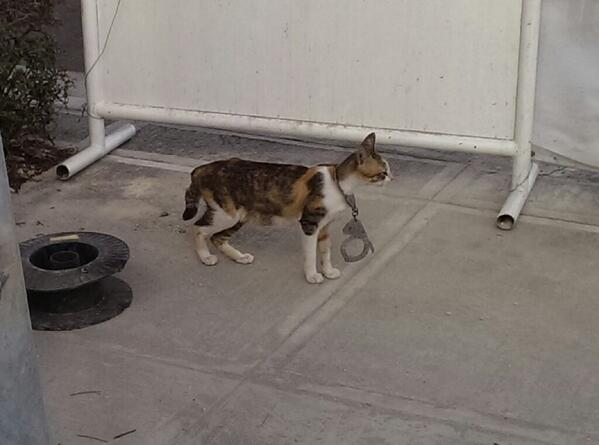
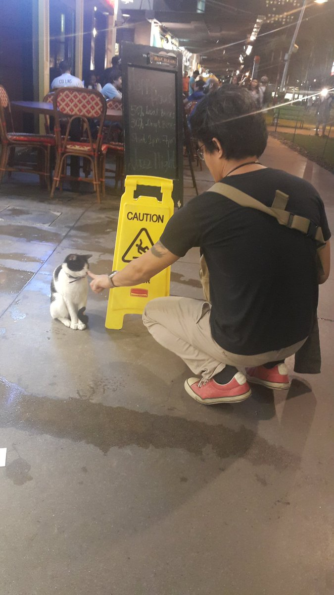

A Twitter-powered data story about
#CatsOfBGC
Cats of BGC was a hot topic in the Philippines during the first quarter of 2018, most notably as a hashtag (#catsofbgc) on Twitter.
Serious animal-rights advocates used the hashtag to promote the welfare of the stray-cat population in Bonifacio Global City (BGC), a business and commercial district in Metro Manila. Casual feline aficionados used it to tag lighthearted selfies with the cats. And attention-seekers and like/retweet- collectors used the hashtag simply to jump on the bandwagon.
DataSeer recently mined posts from Twitter about the topic; determined positive or negative sentiment scores for these posts; created a popularity score based on likes and retweets for each post; and visualized this data into an interactive data story.
Scroll down to explore the Cats of BGC story.
People have been posting about the cats of BGC on social media since 2012.
We attempted to scrape all posts that could be relevant to the context of Cats of BGC, even though they did not explicitly contain the hashtag #catsofbgc or the exact phrase 'cats of BGC'. Because of this, we found that before May 2014, 'Cats of BGC' tweets were either fan or hater posts about Catya 'Cat' Washington, cast member from a reality TV show about catty females, Bad Girls Club (BGC).
We taut we taw a puddy tat.
Oxygen always be playing the black girls of BGC to be the "crazy bitches" Tiffany, Kayla, Natalie, Cat, BRANDI, Stasi now @LucciVee.. smh
The first real tweet about actual felines in Bonifacio Global City went up on 12 May 2014. It illustrated that people were passionate about the topic, so we mustn't expect all posts to be positive.
Some idiot put handcuffs on the neck of this poor cat. Seen moments ago at BGC 7th cor 32nd near the bus stop. #PAWS
People continued to tweet about the cats of BGC until 2016. Some tweets were more popular and more positive than others.
@darkvice01 boop the snoots of BGC cat. Does anyone know this cat's name? Been calling him fancy cat.
The cat-welfare movement in BGC gained greater traction in 2017, as Twitter users with 100K+ followers began tweeting links to blog posts about their advocacy. Serious Trap-Neuter- Vaccinate-Return (TNVR) efforts were underway. And the cats started getting nicknames from their fans.
The Cats of BGC need you!
~ When in Manila Pets & Animals... https://t.co/8hUrNZHA20
As the Chinese Year of the Dog rolled in on 16 Feb 2018, all eyes turned instead to the cats, with a >500-word Facebook post by a certain Lucy M going viral on Twitter and other social media platforms.
The post-liked 4.8K times and shared 12K times-told of five-star hotel Shangri-La at the Fort (in BGC) allegedly ordering pest-control company PestBusters to remove alley cats from the hotel's perimeter in the dead of the night. PestBusters allegedly went beyond Shangri-La's perimeter.
And both ailurophiles and casual observers raised questions about which cats were affected and what happened to them.
No amount of clarification or third-party reporting in the subsequent days seemed to abate the fire that the alleged Dr. Evils and Mr. Bigglesworths found themselves in.
Not this official statement from Shangri-La at the Fort on February 18...
Not this Inquirer.net report on February 19...
Not this personal message from the hotel's General Manager on February 20...
Nor this official statement from PestBusters on February 23.
The only thing, it seemed, that could induce Shangri-La and PestBusters to cough out this 'purr-ball' was time.
Because as of March 31, at an average of 4 tweets per day with an average sentiment score of 0.54 - compared to a high of 29 tweets per day in February with an average sentiment score of 0.94 - the issue appears to have died down.
Have the 'Cats of BGC' issue run its course? Or does it have one more left of its nine lives?
{kind=link}
{kind=link}